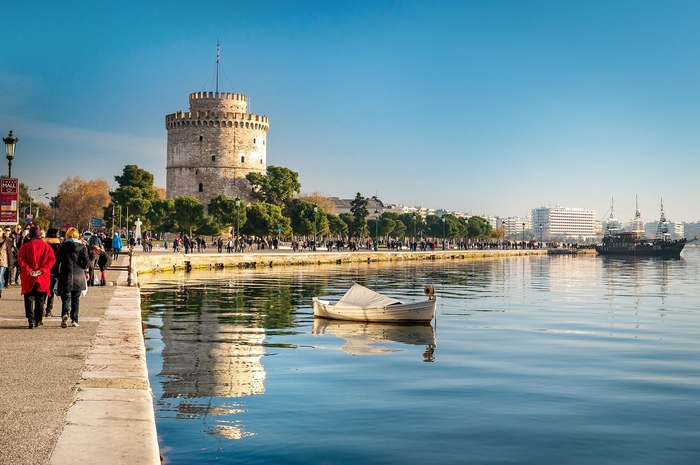
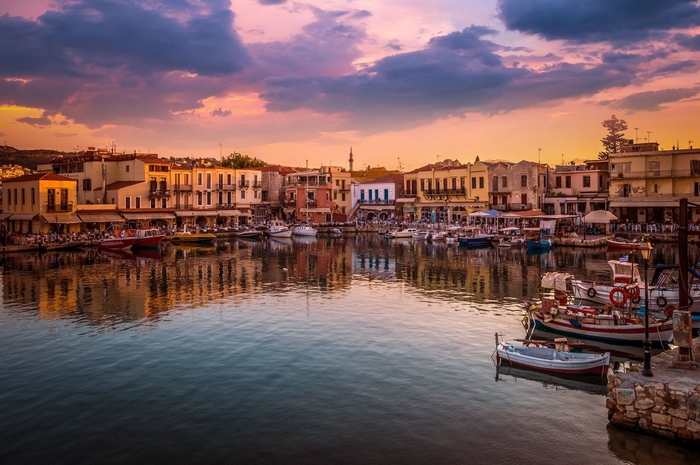

Fotis Airlines
Welcome to The Best Airlines! Have a nice trip!
Destinations
-
Athens

-
Thessaloniki
 -
Rethymno

Flights
| Flight | Monday | Tuesday | Wednesday | Thursday | Friday | Saturday | Sunday |
|---|---|---|---|---|---|---|---|
| Athens-Thessaloniki | 12:00-14:00 | 15:00-17:00 | 12:00-14:00 | 15:00-17:00 | 12:00-14:00 | 15:00-17:00 | 19:00-21:00 |
| Athens-Rethymno | 12:00-14:00 | 15:00-17:00 | 12:00-14:00 | 15:00-17:00 | 12:00-14:00 | 15:00-17:00 | 19:00-21:00 |
| Thessaloniki-Athens | 12:00-14:00 | 15:00-17:00 | 12:00-14:00 | 15:00-17:00 | 12:00-14:00 | 15:00-17:00 | 19:00-21:00 |
| Thessaloniki-Rethymno | 12:00-14:00 | 15:00-17:00 | 12:00-14:00 | 15:00-17:00 | 12:00-14:00 | 15:00-17:00 | 19:00-21:00 |
| Rethymno-Athens | 12:00-14:00 | 15:00-17:00 | 12:00-14:00 | 15:00-17:00 | 12:00-14:00 | 15:00-17:00 | 19:00-21:00 |
| Rethymno-Thessaloniki | 12:00-14:00 | 15:00-17:00 | 12:00-14:00 | 15:00-17:00 | 12:00-14:00 | 15:00-17:00 | 19:00-21:00 |
Air Info
MITILINI AIRPORT "ODYSEAS ELITIS"
The airport is located 7 km far from the city center of Mitilini.
Website: https://www.mjt-airport.gr/en
Access: https://www.mjt-airport.gr/en/flights--more/airport-information#to--from-the-airport
Contact: https://www.mjt-airport.gr/en/mjt/feedback
Telephone: +30 2251 038 700
Standard Time Zone: GMT/UTC +2 hours
Airport Code: MJT
Travel Guides
Athens
Welcome to Athens, historical capital of Europe. Welcome to the birthplace of democracy, arts, science and philosophy of western civilisation. Home of Plato, Socrates, Pericles, Euripides, Sophocles, Aeschylus. Athens is one of the world’s oldest cities. It’s recorded history spanning around 3.400 years and it is being inhabited since the 11th millennium B.C. E. Today, under the shadow of Parthenon, the contemporary urban scenery of the sprawling city reflects its exciting history, its multi- cultural modern personality as well as the infrastructure and facilities. The perfect Mediterranean climate with the legendary greek sunlight, the unique combination of glorious history with modern, urban innovation, the coexistence of great culture with astonishing natural beauty, the high standard hotel accommodation, modern means of transportation such as the cutting edge modern metro, the vibrant rhythm of life, the wide choice of opportunities for shopping, dining and night life and of course the warmth of the Athenians people feature Athens as the ideal all year round city break destination. The city of Parthenon is an open air museum. A large part of the town’s historic center has been converted into a 3 km pedestrian zone, one of the largest in Europe. It leads to the major archaeological sites (“archaeological park”), reconstructing – to a large degree – the ancient landscape. Either on foot or by bike, the ‘’Grande Promenade’’ around Acropolis is an unforgettable journey through history.
Thessaloniki
The metropolis of Thessaloniki has a population of over a million and is the biggest city in the northern part of Greece. It is built by Thermaïkos and Strymonikos Gulf, on fertile grounds resting beside the Rivers of Axios, Gallikos and Loudias, as well as the lakes Koroneia and Volvi. Findings prove that Thessaloniki has been inhabited since prehistoric times, marked by multiculturalism, yet its present day modernised state is charmingly intertwined with archaeological sites, byzantine churches and other significant monuments from the past. Thessaloniki is a busy, bustling city at all times of the day but especially at night when it becomes brighter and colourful.
Rethymno
Rethymno is located in the north end of the prefecture, built by the sea and is a city with many faces. Rethymno or Rithymna as it was once called has been inhabited since the Later Minoan III period. Nowadays, it keeps the elements inherited by its history (from antiquity up to now), preserving at the same time the characteristics of a modern city. You can reach Rethymno by boat from Piraeus or by plane from Athens to Chania and then drive 60 km to Rethymno.